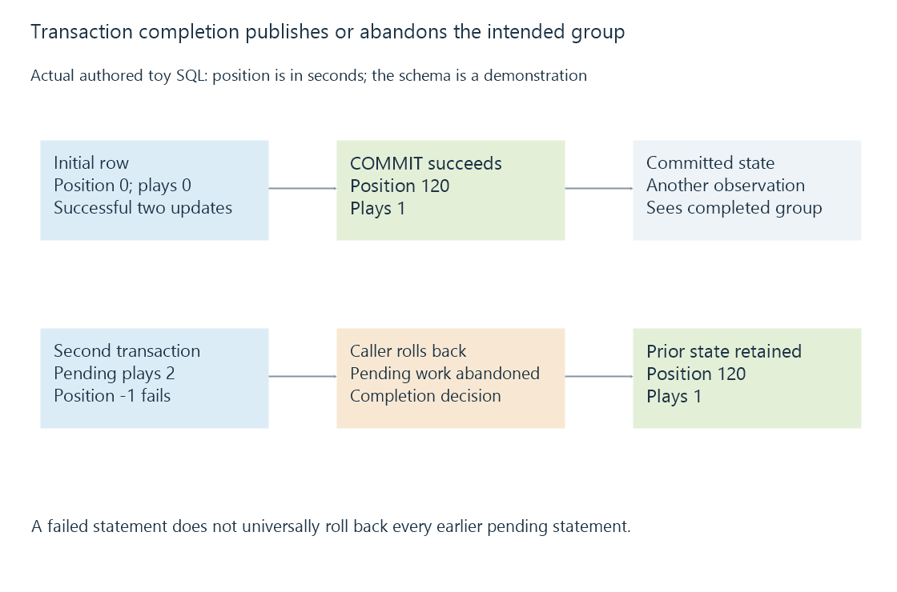

Database transactions and atomic application changes
A database transaction groups related changes under atomicity and isolation rules, while commit durability and external effects require their own guarantees.
A database transaction gives related changes a shared completion boundary. If an application needs to update two records together, it can arrange that other connections do not observe a half-completed result under the database's supported isolation rules.
Atomicity, isolation and durability describe different parts of that promise. A transaction is most useful when the application knows which changes need to belong together.
A complete change has more than one field
Consider a demonstration table holding a playback-like position in seconds and a count. This is a purpose-built SQLite example with a constraint that prevents negative values.
CREATE TABLE demo_state (
item TEXT PRIMARY KEY,
position INTEGER NOT NULL CHECK (position >= 0),
plays INTEGER NOT NULL CHECK (plays >= 0)
);
INSERT INTO demo_state VALUES ('film-A', 0, 0);
BEGIN;
UPDATE demo_state SET plays = plays + 1 WHERE item = 'film-A';
UPDATE demo_state SET position = 120 WHERE item = 'film-A';
COMMIT;
After the successful commit, the row contains position 120 and count one. The application intentionally chose one boundary for both updates. Two separate automatically committed statements would instead create two completion points.

The same idea applies to more complex server state, but the actual schema, constraints and units belong to the application. Emby's public playback positions use documented units that should not be inferred from this table.
A failed statement needs deliberate error handling
Now begin another transaction, increase the count and then attempt a negative position:
BEGIN
UPDATE count: plays becomes 2 inside this transaction
UPDATE position to -1: constraint failure
Caller chooses ROLLBACK
Committed row remains: position 120, plays 1
The constraint prevents the invalid statement from completing. It does not mean that every SQLite error automatically reverses every earlier statement in the active transaction.
For common constraint behavior, the failed statement is rolled back while prior work in that transaction can remain pending. The caller's explicit rollback gives this example its all-abandoned result.
An application that catches the error and carelessly commits the remaining work could publish the increased count without the intended position change. The database cannot infer the application's original grouping intention after the application chooses a different completion action.
Isolation governs what another reader sees
Other connections do not ordinarily see those uncommitted changes under SQLite's normal isolation arrangements. After a commit, a new observation can see the completed state.
A reader already holding a WAL snapshot can continue seeing its older point until that read transaction ends. That is a coherent snapshot, not necessarily the newest committed value.
The transaction's own connection can observe its pending changes. “I read back the new value” from that connection therefore does not prove that other clients can see it or that it is durable.
A commit can fail to complete
A commit request can encounter a busy or failing condition. In SQLite, a busy commit can leave the transaction active so the caller may retry the commit when the relevant condition changes. Other failures have their documented effects.
This is why a complete operation includes checking the commit result. Issuing COMMIT is not identical to receiving a successful completion.
Retrying also needs the right boundary. If the transaction is still active, blindly repeating all updates can duplicate a count increment. If the earlier transaction is known to have rolled back, the caller can start a fresh attempt according to the operation's policy.
The example verifier checks successful commit and explicit rollback against isolated demonstration data. It does not operate on a real server database.
Durable state depends on the storage contract
A database coordinates its journal or WAL and the synchronization calls appropriate to its configuration. Durability after a power failure depends on those settings and on the storage stack honoring them.
A completed transaction does not promise survival under every possible weakened synchronization policy. Likewise, writing the main database file is not the only way a transaction can become part of the current logical state: committed WAL records can participate.
For backups, capture a consistent supported data set rather than copying an arbitrary file between these stages.
A database rollback does not undo the outside world
If an application sends a notification or changes a lamp between two SQL updates, database rollback cannot unsend that message or restore the lamp automatically. Those effects occur in another system.
A reliable design records an intended external action under a durable database boundary and then processes it with its own retry and identity rules. That separates “state committed” from “effect delivered” without pretending one database transaction controls every service.
For an Emby integration or plugin, the lesson is to identify the real completion boundary and inspect its result. A coherent database operation, a visible API response and a completed external action can be related while remaining distinct observations.
See Also
- Database write-ahead logging, readers and checkpoints
- Database locking and competing operations
- Application-data backups and consistent server state